Биосеребро Арговит
Субстанция наноструктурированного серебра (наносеребро, кластерное серебро) — безопасное средство нового типа для медицины, ветеринарии и сельского хозяйства.
О компании НПЦ «Вектор-Вита»
Общество с ограниченной ответственностью Научно-производственный центр «Вектор-Вита» более 20 лет занимается разработкой, изучением и производством инновационных субстанций наноструктурированного серебра и препаратов на их основе. Субстанции предназначены для целей здравоохранения, медицины, ветеринарии, животноводства, птицеводства, растениеводства и других отраслей народного хозяйства.
Биосеребро Арговит (синонимы: наносеребро, наночастицы серебра, кластерное серебро) и его варианты представляют собой водную суспензию наноразмерных частиц серебра, стабилизированных полимерами медицинского назначения. Термин «биосеребро» используется, чтобы выделить Арговит из массы других препаратов с наночастицами серебра и обратить внимание на его особые свойства. Арговит — безопасный, нетоксичный продукт, относится к 4-му классу опасности (малоопасные вещества), в дополнение к антимикробной активности проявляет биотические и парафармацевтические свойства.
НПЦ «Вектор-Вита» специализируется на выпуске концентрированных водных растворов субстанций (сырья). С использованием этих концентратов компании — потребители сырья — на своих производственных площадях выпускают серебросодержащую продукцию в потребительской упаковке в виде растворов, спреев, гелей, кремов, БАДов, ветеринарных препаратов, изделий медицинского назначения. Нами и нашими партнёрами, использующими Арговиты, зарегистрированы 3 лекарственных ветеринарных препарата, 1 изделие медицинского назначения, свыше 10 гигиенических и косметических средств с антимикробным действием.
Биотики ↑
— химические вещества экзогенного происхождения, которые входят в состав биотических структур и систем организма. Они не только принимают участие в физиологических процессах, но и нормализуют их, повышают сопротивляемость организма к действию вредных агентов и, зачастую, играют роль катализаторов биологической природы.
Парафармацевтики ↑
— средства, подобные лекарственным и отличающиеся от них только более низкой дозой действующих веществ: иммуномодуляторы, натуральные антибиотики, антисептики, эубиотики, ферментные препараты, адаптогены и др.
Разработчики
В разработке Арговита и его приложений принимал участие международный коллектив учёных:
- Национальный автономный университет Мексики / Universidad Nacional Autónoma de México (UNAM)
- Международная сеть бионанотехнологий с влиянием на биомедицину, продукты питания и биобезопасность / Red Internacional de Bionanotecnología (CONACYT)
- Центр нанонауки и нанотехнологий (Энсенада, Мексика) / Centro de Nanociencias y Nanotecnología (CNyN-UNAM)
- Томский политехнический университет (Томск, Россия)
- НИИ клинической и экспериментальной лимфологии — филиал ИЦиГ СО РАН (Новосибирск, Россия)
- Сибирский НИИ животноводства — филиал СФНЦА РАН (Краснообск, Россия)
- Сибирский филиал ФНЦ Пищевых Систем им. В. М. Горбатова РАН (Новосибирск, Россия)
- Институт экспериментальной ветеринарии Сибири и Дальнего Востока — филиал СФНЦА РАН (Краснообск, Россия)
- Компания BionAg (Тихуана, Мексика)
- ООО НПЦ «Вектор-Вита» (Новосибирск, Россия)
Комплексный подход с участием специалистов разного профиля позволил создать оригинальные продукты с экспериментально доказанными свойствами, востребованными в различных областях народного хозяйства.
О продукции
При конструировании субстанций серии Арговит были приняты во внимание следующие требования:
- субстанции должны быть водорастворимыми и стабильными в водных растворах;
- все используемые исходные компоненты субстанций должны быть разрешены для применения в медицинской практике;
- субстанции должны иметь низкую токсичность, для чего в их состав должен быть включён компонент или компоненты с антитоксическим действием в достаточном количестве;
- технология получения субстанций должна быть масштабируемой и воспроизводимой;
- антибактериальная и противовирусная активность субстанций должна быть достаточно высокой, включая лекарственно устойчивые штаммы возбудителей.
Исходя из перечисленных требований, в качестве стабилизатора наночастиц (НЧ) серебра были взяты полимеры медицинского назначения поливинилпирролидон (ПВП) и гидролизат коллагена (желатина, ГК). ПВП обладает антитоксическим действием, используется в медицине как энтеросорбент (препарат «Энтеродез») и в виде внутривенных плазмозамещающих растворов («Гемодез», «Неогемодез»). Гидролизат коллагена также обладает антитоксическими свойствами и разрешён к применению в медицине в качестве внутривенных плазмозамещающих растворов (препарат «Желатиноль»). По сравнению с ПВП, ГК полностью подвергается биодеградации, пептиды ГК стимулируют пролиферацию клеток, ускоряют заживление ран.
В качестве источника серебра использовали нитрат серебра, также разрешённый для применения в медицинской практике. Для восстановления серебра и получения металлических наночастиц использовали электронно-лучевую инициацию (патенты РФ 2602534, 2646105, патентообладатель — НПЦ «Вектор-Вита»). Такой подход позволил создать целую серию перспективных субстанций наноразмерного серебра с востребованными свойствами и организовать их промышленное производство. Субстанции выпускаются в виде концентрированных водно-полимерных растворов.
Данные электронной микроскопии (ЭМ) для базовых субстанций Арговита
Используемая технология получения наночастиц позволяет в определённых пределах регулировать размер и морфологию частиц, что открывает возможности оптимизации продукта для конкретных систем. Для наглядности приведены ЭМ-снимки соответствующих образцов Арговита.
Арговит-Био
Средний размер частиц — 8.45 нм, среднее отклонение — 3.26 нм, выборка — 202 частицы.
| Стабилизатор | гидролизат коллагена (ГК) |
|---|---|
| ЭМ-снимки | 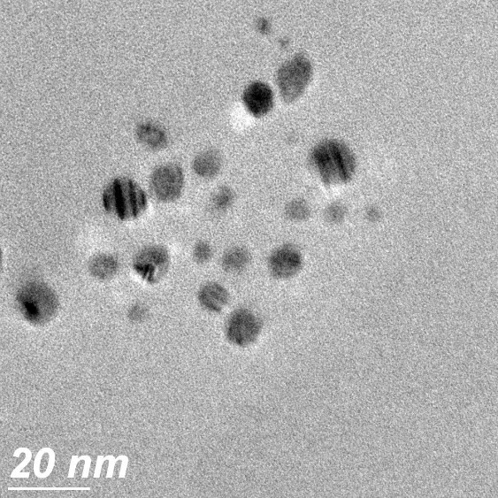 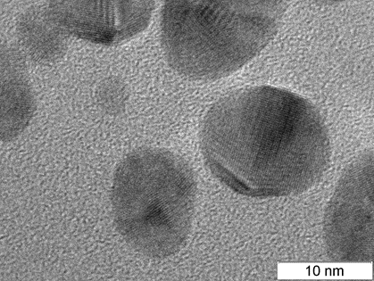 |
| Гистограмма | 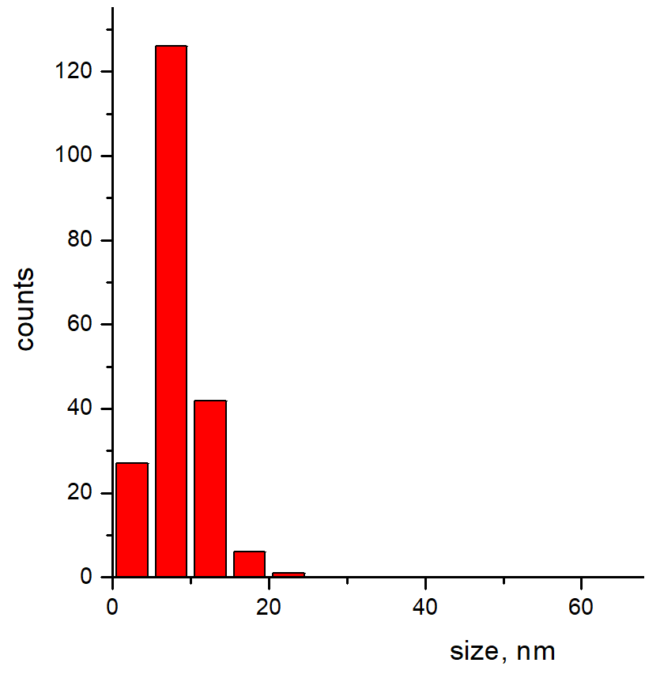 |
Арговит-С
Средний размер частиц — 10.71 нм, среднее отклонение — 6.91 нм, выборка — 360 частиц.
| Стабилизатор | смесь ГК + ПВП |
|---|---|
| ЭМ-снимок | 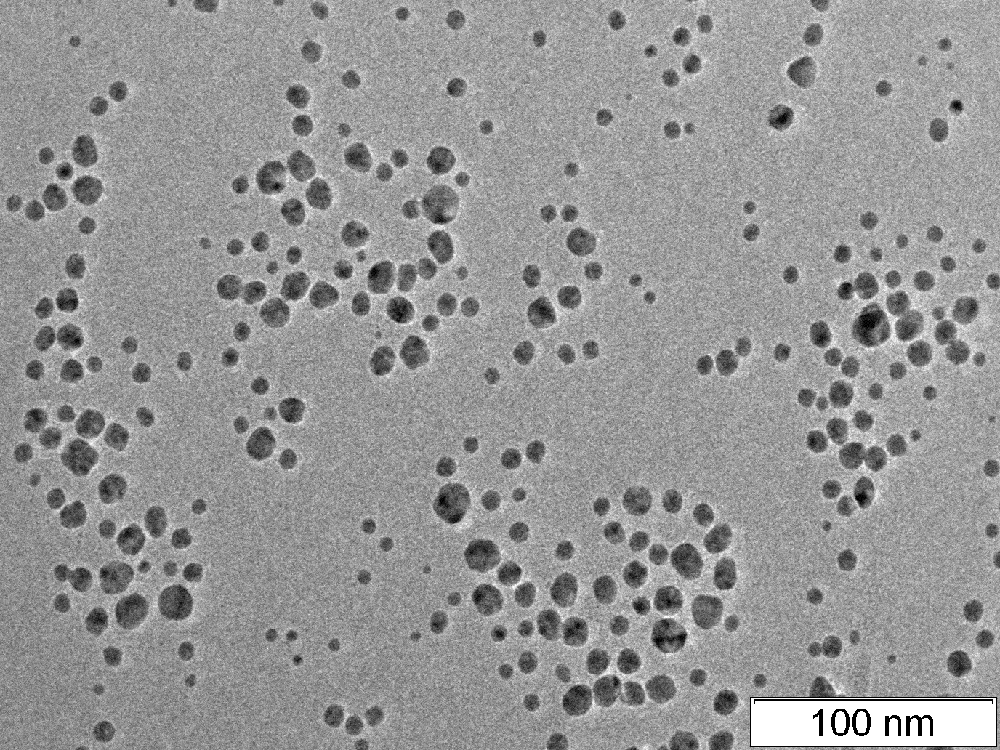 |
| Гистограмма | 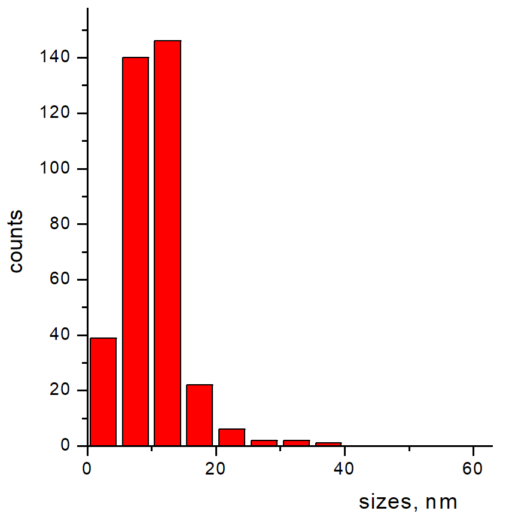 |
Арговит-ПВП-1
Средний размер частиц — 16.52 нм, среднее отклонение — 8.92 нм, выборка — 369 частиц.
| Стабилизатор | ПВП |
|---|---|
| ЭМ-снимок | 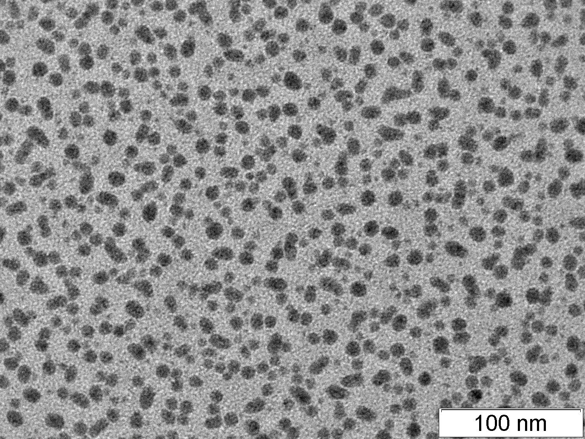 |
| Гистограмма | 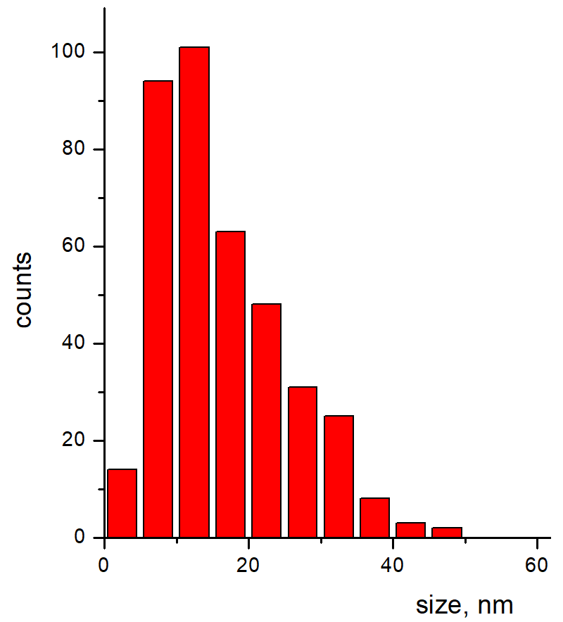 |
Арговит-ПВП-2
Средний размер частиц — 20–50 нм.
| Стабилизатор | ПВП |
|---|---|
| ЭМ-снимки | 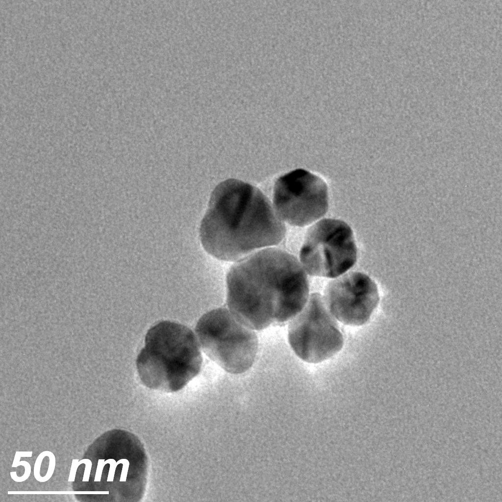 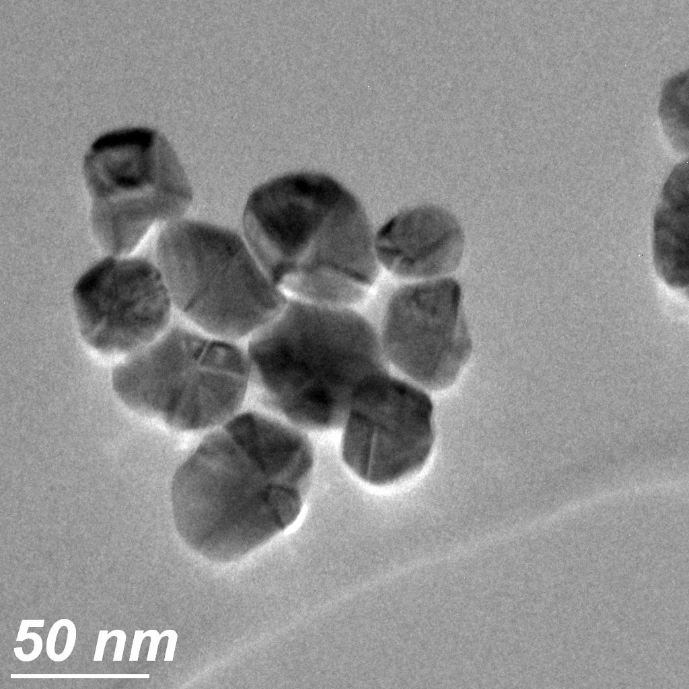 |
Арговит-ПВП-3
Средний размер частиц — 40–80 нм.
| Стабилизатор | ПВП |
|---|---|
| ЭМ-снимки | 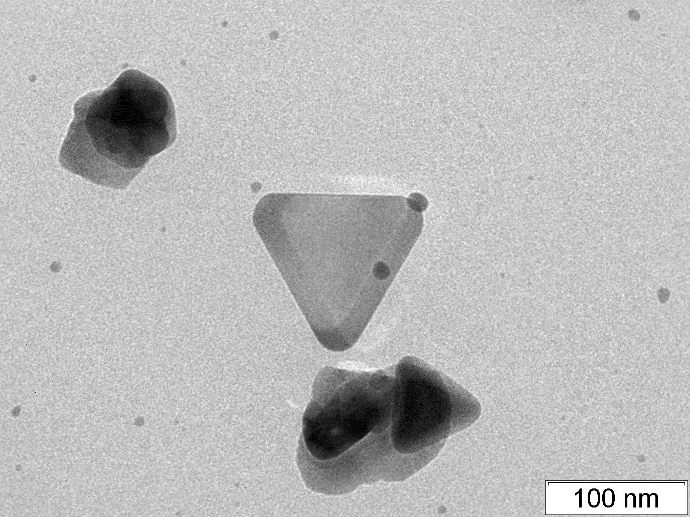 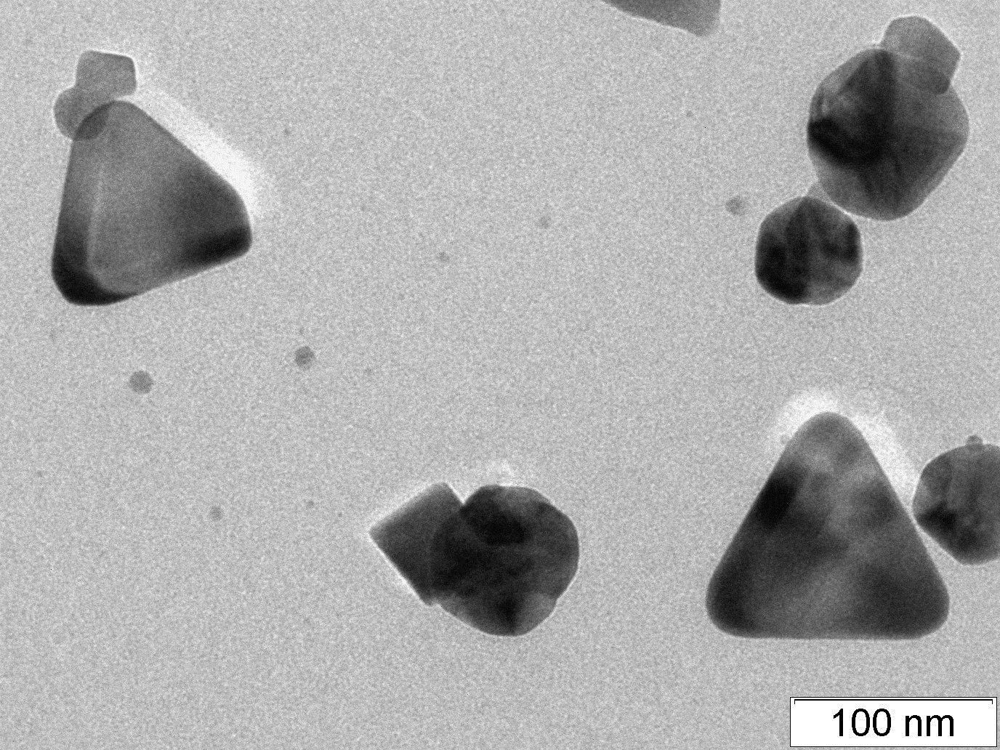 |
Свойства субстанций Арговита
- Широкий спектр антимикробной активности в отношении болезнетворных бактерий, включая антибиотикоустойчивые штаммы, микробные ассоциации и бактериальные плёнки.
- Высокая антивирусная и фунгицидная активность.
- Выраженное противовоспалительное и ранозаживляющее действие.
- Стимулирует неспецифический иммунитет — как местный (лизоцим), так и общий.
- Безопасность и низкая токсичность. Соответствует 4-му классу опасности по ГОСТ 12.1.007-76.
- Стабильность, сохранность, длительные сроки хранения.
Препараты, содержащие субстанции Арговит, прошли широкую клиническую апробацию в различных областях народного хозяйства (см. примеры использования Арговита). Научно-доказательная база — более 150 статей, более 15 диссертаций, более 40 патентов — размещена на странице «Наука».
О востребованности инновационных препаратов биосеребра
Локальные вспышки опасных инфекций (ВИЧ, геморрагическая лихорадка Эбола, атипичная пневмония, птичий грипп и др.) и особенно пандемия COVID-19 высветили глобальную проблему — существует реальная и достаточно высокая вероятность возникновения новых инфекций, представляющих повышенную опасность для человека и человечества. Предшественники этих инфекций, как правило, циркулируют среди животных и птиц. Окружающий животный и растительный мир по существу является естественным резервуаром, в котором циркулирует огромное количество вирусов, бактерий и других микроорганизмов, значительная часть которых ещё не исследована и даже не открыта.
Жизненный цикл вирусов и бактерий составляет часы и дни, что гораздо короче жизненных циклов животных и человека (годы, десятилетия). Для бактерий и вирусов возможна реализация горизонтального переноса генов: изменчивость и обусловленная ею эволюция микроорганизмов идёт гораздо быстрее, чем у макроорганизмов. Появляются новые виды инфекционных агентов или новые штаммы известных возбудителей с новыми свойствами. В зависимости от вирулентности (болезнетворности) и контагиозности (заразности) новых возбудителей последствия такого проникновения в человеческую популяцию могут быть совершенно непредсказуемыми и тяжёлыми.
Новые опасные штаммы микробов возникают и в человеческой популяции, во многом по вине самого человека. Широкое и неправильное использование антибиотиков в медицине и сельском хозяйстве привело к появлению антибиотикоустойчивых штаммов бактерий. Парадоксально, но именно медучреждения стали основным источником появления и распространения бактерий с множественной устойчивостью к противомикробным препаратам — так называемых «супермикробов», «супербактерий». Угроза приобретает глобальный характер и сулит потери, сопоставимые с пандемией коронавируса. Нельзя исключать и угрозу биотерроризма.
Высокая контагиозность новых инфекционных возбудителей значительно повышает риск возникновения эпидемий и мировых пандемий. Рост населения и его скученность в больших городах, постоянная миграция, туризм, деловые поездки повышают вероятность быстрого распространения инфекций. Рекомендуемые меры — карантин, самоизоляция, социальная дистанция, маски, перчатки, антисептики — явно недостаточны. Для создания и организации производства вакцин нужно время, а инфекция распространяется быстро: пока вакцина создаётся, инфекция может перерасти из локального очага в эпидемию или даже пандемию. Пандемия коронавирусной инфекции показала, что имеющиеся противовирусные препараты (РНК-азы, реафероны, индукторы интерферонов, ингибиторы репликации вирусов и т. д.) недостаточны для должного уровня защиты и лечения.
Для борьбы с такого рода инфекциями необходимы препараты нового типа, отличающиеся по механизму действия от существующих антимикробных средств. Большие надежды возлагаются на препараты наноструктурированного серебра (наносеребра), получаемые с использованием современных нанотехнологий.
На первый взгляд опубликованная информация по наносеребру противоречива: одни авторы отмечают высокую эффективность и безопасность препаратов наносеребра, другие — их токсичность или малую эффективность. При критическом анализе становится ясно, что в разных исследованиях использовались разные препараты серебра — одни наносеребряные препараты токсичны и малоэффективны, другие нетоксичны и эффективны. Углублённое изучение показывает, что такая разноречивость связана с технологическими особенностями получения серебросодержащих препаратов, обусловливающими разнообразие их биохимических и токсикологических свойств. По существу, наносеребро — групповое название класса препаратов, подобно «пептидам». Многие разработчики совершают методологическую ошибку, полагая, что все препараты наносеребра аналогичны и должны проявлять примерно одинаковые свойства независимо от способа получения, состава и состояния наносеребра. В реальности препараты наносеребра в зависимости от способа получения могут значительно различаться по токсикологическим показателям и эффективности даже при формально одинаковом химическом нетто-составе.
Субстанция биосеребра Арговит и препараты на её основе имеют обширную научно-доказательную базу по безопасности и эффективности: более 150 опубликованных научных статей, более 15 авторефератов диссертаций, более 40 заявок на патенты и патентов — всё это размещено на странице «Наука».
Для профилактики и лечения новых и вновь возникающих инфекций необходимы препараты нового типа, дополняющие существующие антимикробные средства. Они должны обладать комплексной универсальной активностью в отношении болезнетворных микроорганизмов независимо от их вида (бактерии, вирусы, грибки, простейшие) и повышать устойчивость макроорганизма к инфицированию, то есть стимулировать неспецифический иммунитет — как общий, так и местный. Субстанция биосеребра Арговит соответствует этим требованиям.
Показана эффективность и перспективность этой субстанции и препаратов на её основе для борьбы с инфекционными возбудителями в разных областях медицины и ветеринарии:
- кишечные инфекции различной этиологии;
- острые респираторно-вирусные инфекции (ОРВИ) и связанные с ними бактериальные осложнения (ЛОР-заболевания);
- гнойная хирургия, диабетическая стопа;
- лекарственно устойчивые формы туберкулёза;
- вирусные инфекции, обусловленные как ДНК-, так и РНК-содержащими вирусами.
В целом всё это позволяет утверждать, что данная субстанция может быть эффективно использована для организации производства новых инновационных востребованных профилактических и лечебных медицинских и ветеринарных препаратов.
Предложение к сотрудничеству
Вниманию руководителей профильных медицинских, фармацевтических и ветеринарных производственных предприятий.
- Повысьте эффективность и конкурентоспособность своей продукции.
- Обновите и расширьте номенклатуру продукции.
- Организуйте производство инновационных серебросодержащих препаратов с использованием субстанции биосеребра Арговит.